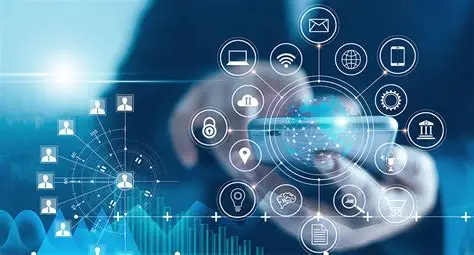

Di era digitalisasi modern abad ke-21, cara manusia bertahan hidup dan mencari uang mengalami pergeseran radikal dari dunia fisik ke dunia virtual. Sektor perdagangan beralih ke platform E-commerce dan lokapasar digital yang memungkinkan transaksi jual-beli global tanpa toko fisik. Pola kerja konvensional yang kaku mulai digantikan oleh gig economy dan sistem kerja Remote atau WFH (Work From Home), di mana seseorang dapat bekerja untuk perusahaan asing dari kamarnya sendiri hanya dengan koneksi internet. Profesi baru yang berbasis teknologi mendominasi pasar kerja, seperti Software Engineer, Data Scientist, Content Creator, UI/UX Designer, hingga Digital Marketer.
Batasan jarak geografis dan waktu telah sepenuhnya runtuh. Komunikasi manusia saat ini terjadi dalam hitungan detik, gratis, dan berbasis data multimedia interaktif melalui jaringan internet nirkabel (Wi-Fi dan 4G/5G). Pertukaran pesan teks, gambar, video, dan dokumen dilakukan secara instan melalui aplikasi pesan singkat seperti WhatsApp dan Telegram. Di sisi lain, kebutuhan rapat kerja atau tatap muka jarak jauh dapat diselesaikan secara virtual menggunakan platform konferensi video seperti Zoom atau Google Meet, memungkinkan kolaborasi antar manusia dari berbagai belahan dunia secara real-time.
Aspek penunjang utama era ini adalah digitalisasi data dan otomatisasi mesin pintar. Banyak pekerjaan kasar dan rutinitas administratif yang dulunya dilakukan manusia, kini digantikan oleh sistem komputerisasi, robotika industri, serta teknologi berbasis penyimpanan awan (cloud computing). Terlebih lagi, kehadiran teknologi Kecerdasan Buatan (AI) seperti asisten virtual, sistem analitik data, dan AI generatif telah membantu manusia mempercepat proses analisis, pembuatan kode program, penulisan materi, hingga pembuatan desain seni dalam hitungan detik.
Sistem keuangan dan peredaran mata uang mengalami dematerialisasi (hilangnya bentuk fisik uang kertas). Masyarakat modern beralih menggunakan ekosistem Financial Technology (FinTech), dompet digital (E-wallet), internet banking, dan sistem pembayaran pemindaian cepat seperti QRIS. Seluruh transaksi harian, mulai dari membeli makanan, membayar tagihan listrik, hingga membeli tiket transportasi dilakukan tanpa menyentuh uang tunai sama sekali (cashless). Bahkan muncul aset digital baru berbasis teknologi kriptografi dan blockchain, seperti mata uang kripto (Cryptocurrency), yang menawarkan sistem desentralisasi keuangan global.
Kini manusia hidup dalam dua dimensi, yaitu dunia nyata dan dunia digital (cyberfaktual). Interaksi sosial dan pembentukan budaya populer tidak lagi dimonopoli oleh TV atau koran, melainkan disetir oleh algoritma platform Media Sosial raksasa seperti Instagram, TikTok, dan X (Twitter). Hiburan beralih ke layanan streaming sesuai permintaan (on-demand) seperti Netflix dan Spotify. Setiap individu memiliki "Identitas Digital" tersendiri lewat profil online mereka, yang memicu munculnya fenomena budaya baru seperti FOMO (Fear of Missing Out), ketergantungan layar gadget (screen time tinggi), serta terbentuknya komunitas global tanpa sekat negara.